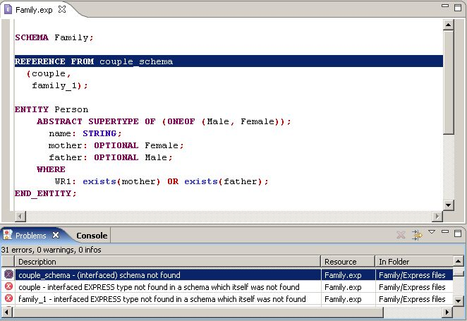

by opening an existing express file (with .exp extension), for
example, by double-clicking on it in the Navigator panel.
However, if you open an express file using File -> Open File, the
functionality of the Editor will be limited. That is because the file
will be considered by Eclipse as an external file, not as an Eclipse
resource. If your Express file is in an Express project, or in any
other type of Eclipse project, or if you can import it into an Eclipse
project first, better to open it as an Eclipse resource, by choosing it
in the Navigator or other
panel. But you still can edit and compile external project-less files
with limited Editor functionality.
After a new Express file is created or an existing file is opened, the
Express Editor panel is activated on the Workbench (see Figure 1). A name of the file appears
in the tab of the editor panel. If an asterisk (*) appears at the left
side of the tab this indicates that the editor has unsaved changes. If
an attempt is made to close the editor or exit the workbench with
unsaved changes a prompt to save the editor's changes will appear.
The Express Editor provides basic functionality for Express files -
Express syntax highlighting, error marking and navigation, when
compiling the files with the Express Compiler. Error marking and
navigation is not available for external express files, but they still
can be compiled, and express errors are displayed on the Console panel.
 Figure 1. Express Editor panel
with highlighted errors